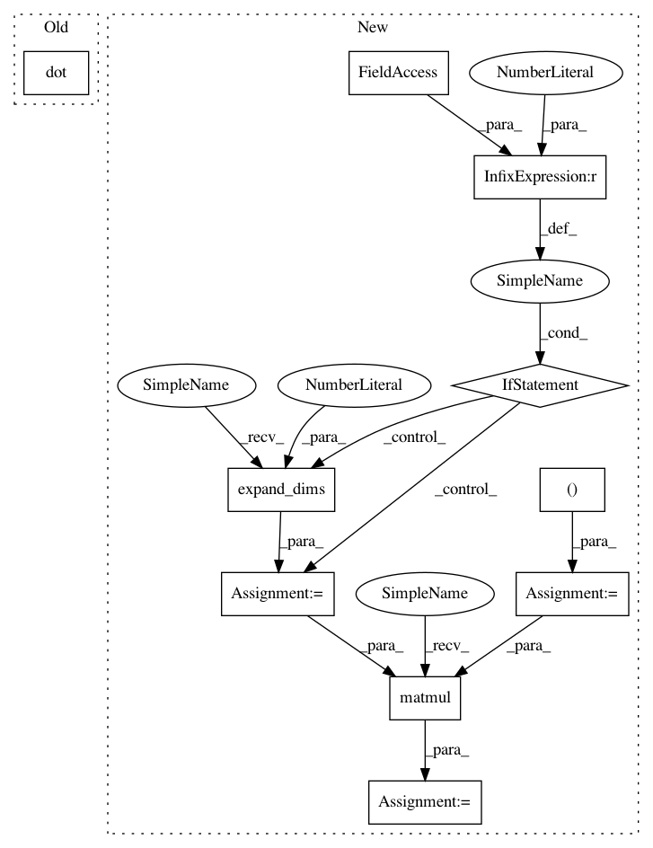

506b234094009d55d326f1ce957f53f15d4b65ee,geomstats/spd_matrices_space.py,SPDMetric,log,#SPDMetric#Any#Any#,182
Before Change
inv_sqrt_base_point)
log_at_id = group_log(point_near_id)
log = np.dot(np.dot(sqrt_base_point,
log_at_id),
sqrt_base_point)
return log
After Change
This gives a tangent vector at point base_point.
if point.ndim == 2:
point = np.expand_dims(point, axis=0)
assert point.ndim == 3
if base_point.ndim == 2:
base_point = np.expand_dims(base_point, axis=0)
assert base_point.ndim == 3
n_points, _, _ = point.shape
n_base_points, mat_dim, _ = base_point.shape
assert (n_points == n_base_points
or n_points == 1
or n_base_points == 1)
sqrt_base_point = np.zeros((n_base_points, mat_dim, mat_dim))
for i in range(n_base_points):
sqrt_base_point[i] = scipy.linalg.sqrtm(base_point[i])
inv_sqrt_base_point = np.linalg.inv(sqrt_base_point)
point_near_id = np.matmul(inv_sqrt_base_point, point)
point_near_id = np.matmul(point_near_id, inv_sqrt_base_point)
log_at_id = group_log(point_near_id)
log = np.matmul(sqrt_base_point, log_at_id)
log = np.matmul(log, sqrt_base_point)
In pattern: SUPERPATTERN
Frequency: 3
Non-data size: 10
Instances
Project Name: geomstats/geomstats
Commit Name: 506b234094009d55d326f1ce957f53f15d4b65ee
Time: 2018-02-26
Author: ninamio78@gmail.com
File Name: geomstats/spd_matrices_space.py
Class Name: SPDMetric
Method Name: log
Project Name: geomstats/geomstats
Commit Name: b0d0053b1f1738640fc99fba642c83af42d10b22
Time: 2018-02-02
Author: ninamio78@gmail.com
File Name: geomstats/invariant_metric.py
Class Name: InvariantMetric
Method Name: inner_product_matrix
Project Name: geomstats/geomstats
Commit Name: 506b234094009d55d326f1ce957f53f15d4b65ee
Time: 2018-02-26
Author: ninamio78@gmail.com
File Name: geomstats/spd_matrices_space.py
Class Name: SPDMetric
Method Name: log
Project Name: geomstats/geomstats
Commit Name: 506b234094009d55d326f1ce957f53f15d4b65ee
Time: 2018-02-26
Author: ninamio78@gmail.com
File Name: geomstats/spd_matrices_space.py
Class Name: SPDMetric
Method Name: exp